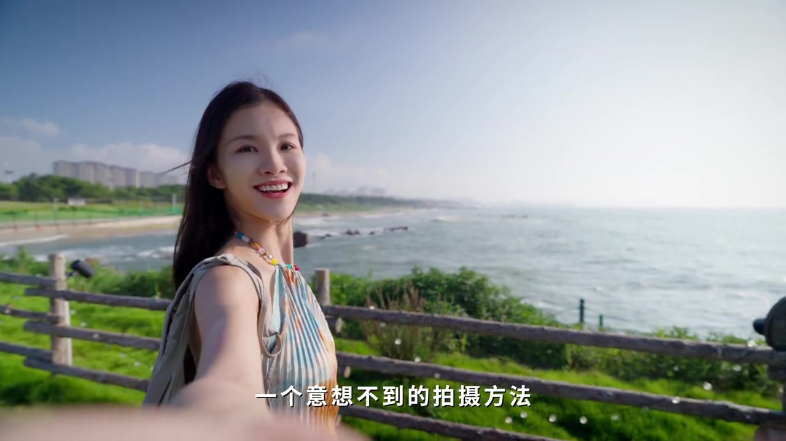
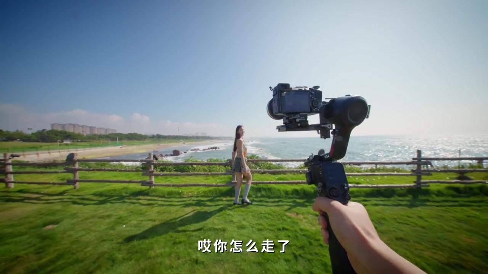
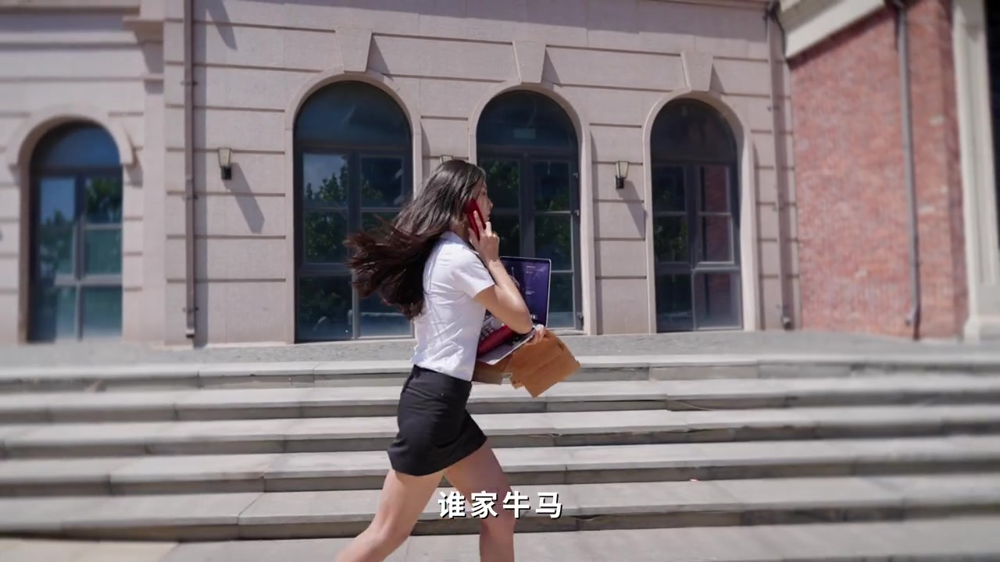
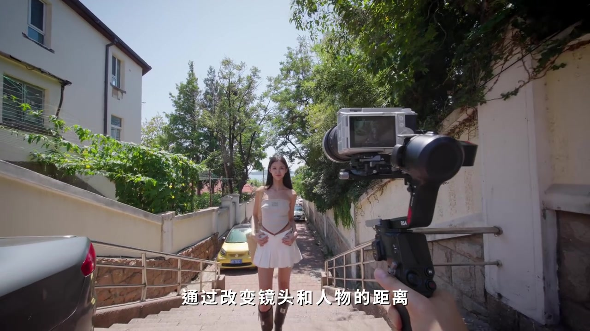
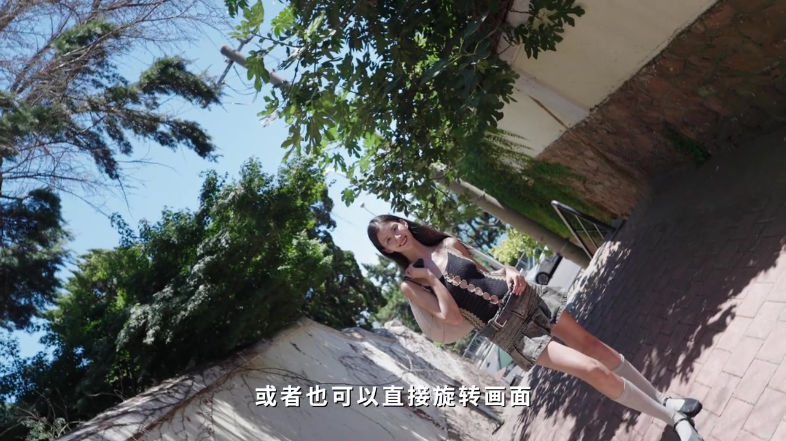
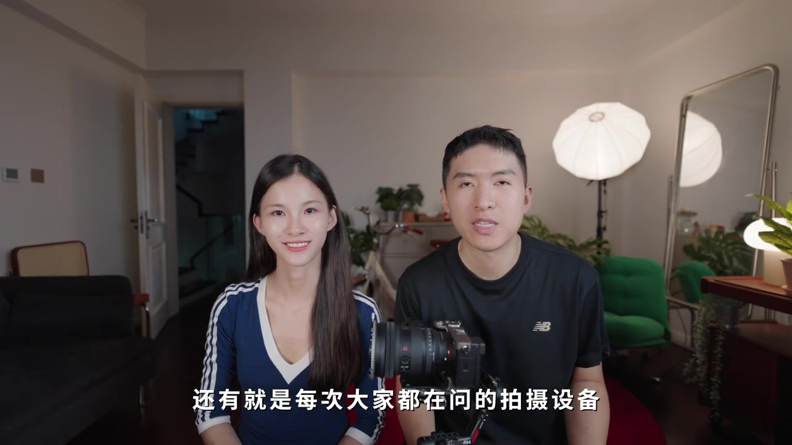

自拍时突然拉远：制造「意外感」
视频一上来就标「第一种」：一个意想不到的拍摄方法——自拍时突然把镜头拉远。UP 主开玩笑说，若 2025 年还有生存法则，给女朋友拍照一定排第一条。为了出片，他带着林圣依去海边牧场，卡在「日出刚好 6 点 50 分 12 秒」开拍。

方法很具体：让她用手扶着镜头往前走；在她回头的一瞬间，向后运镜。画面会得到绝美效果，并自然造出一种「意外」的氛围感。花絮里还能看到 UP 主握着 RS 系列云台跟拍，女主回望并吐槽「哎你怎么走了」。

口播/字幕语义 [00:00–00:24]：「第一种，一个意想不到的拍摄方法」「自拍的时候突然把镜头拉远」「让她用手扶着镜头往前走」「回头那一瞬间向后运镜」「非常有氛围感」。
Whisper「拍摄防火」对照字幕≈「拍摄方法」；「零声音」≈「林圣依」；「非常有分别」≈「非常有氛围感」。转录区仍保留原始识别。
遮挡无缝转场：一秒钟「下班」梗
第二种开场是段职场喜剧：林圣依一手红电话一手电脑狂奔，字幕「第二种」。UP 主说这运镜超级简单，建议「所有牛马」都拍一下——道具随便，闲鱼（口播里的「海鲜市场」）淘旧电话，或拿老板电脑（他立刻澄清：我说的是道具）。

运动形态是跑步镜头；示范设备用 DJI RS4 搭配微单，但强调回家用手机、相机都行。关键操作：选好遮挡物——第一个画面以遮挡物收尾，第二个画面从遮挡物里出来再开始运镜，就能做出丝滑的无缝转场。
口播/字幕语义 [00:24–00:52]：「这个运镜真的超级简单」「道具可以随便……淘一个旧电话」「我这里用的是 RS4」「第一个画面遮挡物作为结尾」「第二个画面从遮挡物出来」「丝滑的无缝转场」。
Whisper「无缝专场」≈「无缝转场」；「海鲜市场」指闲鱼二手平台昵称（画面字幕可见）。
站着不动也能出片：希区柯克变焦
下一句自我调侃：作为「一生都要出片的中国女人的男朋友」，他想让林圣依的出片事业再简单一点——有没有站着不动就能出片的方法？答案是希区柯克变焦：人站着不动，通过改变镜头与人物的距离，做出时间凝固般的感觉。

他还补充：光变焦不够，背景最好干净少干扰；例如落日瞬间更出片。Whisper 在此处误识较多，叙事以可见字幕与运镜逻辑为准。
口播/字幕语义 [00:52–01:13]：「有没有种站着不动就可以出片的方法」「那不就是希区柯克变焦吗」「通过改变镜头和人物的距离」「时间凝固般的感觉」。
Whisper「吸取可可变焦」≈「希区柯克变焦」；「时间凝固版经验的话」≈「时间凝固般的感觉吧」。
旋转画面，再做一个流畅片中转场
画面给出荷兰角示例，字幕提示「或者也可以直接旋转画面」——把旋转当作另一种旅拍视觉变化。随后进入「流畅版片中转场」：特别适合出去玩不知道拍什么时，每次只拍简单小片段，再剪在一起。

示范很直观：人物站画面中间，每次绕着她转一圈拍摄，再把多段环绕剪成转场。女主站在下坡巷道中间，远处可见海面，正是这类素材的典型机位。
口播/字幕语义 [01:13–01:32]：「或者也可以直接旋转画面」「再来一个流畅版的片中转场」「每次只需要拍出简单的小片段再剪在一起」「人物站在画面中间」「绕着她转一圈拍摄」。
Whisper「流笔版」≈「流畅版」；「付出简单的小片段」≈「拍出简单的小片段」；「撞一圈」≈「转一圈」。73–79 秒附近 Whisper 分段稀疏，以画面字幕补全旋转提示。
三分线：让不同场景构图长得一样
很多网友会问：怎么保证不同场景里人物位置和构图完全一样？答案：拍摄时打开手机/相机三分线，每次把人物放在辅助线正中间，构图就能对齐——「超好用，你可以试试」。
口播语义 [01:32–01:49]：「提前把手机相机里的三分线给调出来」「把人物放在辅助线的正中间」「保证拍出来的构图完全一致」。
Whisper「很多网络」≈「很多网友」；「付出间」≈「辅助线」；「包好用的」≈「超好用的」。
微单 + 云台：RS4 / RS4 Mini 与 Pocket 3
收尾回答「大家每次都问的拍摄设备」：一般来说是微单加稳定器；他常用索尼 ZV 系列（Whisper 记成 ZV-11，常见对应为 ZV-E10 / ZV-1 II 一类 vlog 机），并说调色效果很好，想看调色教程可以私信。

他特别强调画面稳定性：拍运镜转场会再搭配云台；现在 RS4 与 RS4 Mini 都在用，RS4 已用一年，Mini 出了之后把追踪模块装到 RS4 上，用来追踪或拍第三视角花絮，一秒钟解锁或收纳。结尾夸「不愧是能做出 Pocket 3 的厂家」，并邀请对旅拍器材感兴趣的观众留言做一期。
口播/字幕语义 [01:49–02:31]：「一般来说就是微单加上稳定器」「画面的稳定性」「RS4 和 RS4 Mini 都在用」「追踪模块可以直接用在 RS4 上」「拍摄一些第三视角的花絮」「不愧是能做出 Pocket 3 的厂家」。
Whisper「原台稳定器」≈「云台稳定器」；「R4 / R445 / R44」≈「RS4」；「Pokey3」≈「Pocket 3」；「做其事」≈「做一期」。设备型号为 UP 主个人推荐，非客观测评结论。
看完可以带走的过程感
整支视频不是课堂板书，而是「成片 → 花絮 → 口播要点」交替：先给你意外拉远和遮挡转场的情绪冲击，再用希区柯克变焦、旋转与环绕补齐站桩/片中转场手段，最后用三分线与 RS4 回答「怎么对齐构图、怎么稳住」。